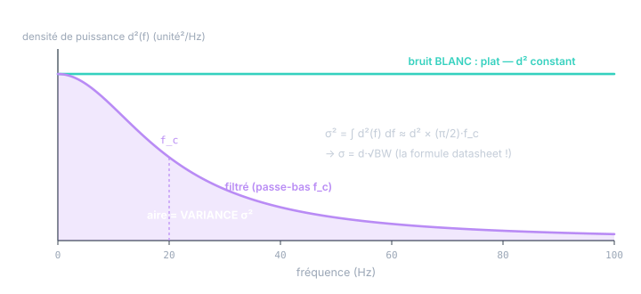

Chapitre 07
Le bruit en fréquence : PSD et bande passante
Objectifs du chapitre
- Comprendre la densité spectrale de puissance (PSD) : la variance, ventilée par fréquence.
- Voir pourquoi le bruit blanc a une PSD plate — et pourquoi il s'appelle « blanc ».
- Décoder l'unité /√Hz et retrouver σ = d·√BW.
- Comprendre l'effet du filtrage : réduire la bande = réduire la variance = corréler.
1. La variance, ventilée par fréquence
Un signal aléatoire stationnaire a une variance σ² — un seul nombre. La densité spectrale de puissance (PSD) S(f) raffine ce nombre : elle dit comment cette variance se répartit entre les fréquences. Les fluctuations lentes du signal contribuent aux basses fréquences, les fluctuations rapides aux hautes. La règle de conservation est la définition même :
« Densité », encore une fois (comme au chapitre 2), signifie « quelque chose à intégrer » : S(f) se mesure en unité² par Hz, et seules ses aires sont des variances. Le lien profond avec le chapitre 5 : la PSD est la transformée de Fourier de l'autocorrélation (théorème de Wiener-Khintchine). Mémoire longue ⇔ énergie concentrée en basses fréquences ; aucune mémoire ⇔ énergie partout.
2. Le bruit blanc : plat en fréquence
Justement : le bruit blanc du chapitre 5 (autocorrélation nulle hors 0) a une PSD constante — la même puissance à toutes les fréquences, comme la lumière blanche contient toutes les couleurs. D'où son nom. Et d'où un paradoxe apparent : une PSD plate intégrée jusqu'à l'infini donnerait une variance infinie ! Le bruit blanc idéal n'existe pas physiquement — tout capteur réel coupe quelque part. Ce qui existe : un bruit plat sur la bande utile, décrit par sa densité d² (unité²/Hz), et la variance réelle dépend de la bande passante qu'on laisse passer.

3. Décoder le /√Hz
Tout s'éclaire : la datasheet spécifie la racine de la densité de puissance — d = √S(f) — pour rester dans l'unité du signal. D'où le µg/√Hz : élevé au carré, il redonne des µg²/Hz, une densité de puissance à intégrer. La chaîne complète :
où BW est la bande passante de bruit équivalente : la largeur du rectangle qui aurait la même aire que la vraie réponse du filtre. Pour un passe-bas du 1er ordre de coupure f_c, BW = (π/2)·f_c ≈ 1,57·f_c — le facteur « mystérieux » du chapitre 16 du cours Kalman, qui n'est que l'intégrale exacte de 1/(1+(f/f_c)²).
Pourquoi la nature spécifie en densité. Le bruit de fond d'un capteur est (quasi) blanc : sa densité d est une propriété du composant, indépendante de l'électronique de filtrage qu'on mettra derrière. La variance, elle, dépend du filtrage choisi par l'utilisateur. La datasheet donne donc l'invariant (d) et vous laisse calculer votre σ selon votre bande. Deux intégrateurs différents du même capteur ont le même d et des σ différents — et les deux datasheets sont justes.
4. Filtrer : moins de variance, plus de mémoire
La figure 7.1 montre le gain : filtrer élimine l'aire haute fréquence, la variance chute. Diviser la bande par 4 divise la variance par 4, donc σ par 2. Mais le chapitre 5 a montré l'autre face : un bruit filtré est corrélé (il a de la mémoire — c'est le même énoncé, dit en temps au lieu de fréquence). D'où trois conséquences opérationnelles :
- Latence : la mémoire du filtre est un retard (cours Kalman, ch. 11). Le compromis bruit ↔ retard est irréductible — on choisit sa bande, on ne gagne pas sur les deux tableaux.
- Échantillons non indépendants : si la cadence d'échantillonnage dépasse la bande, les échantillons successifs se répètent partiellement (N_eff < N, chapitre 5, exercice 2) — sur-échantillonner un signal filtré n'apporte pas d'information neuve.
- Le R du filtre de Kalman doit suivre : mesurez σ avec le filtrage réellement en service. Un R pris sur la datasheet « pleine bande » alors que le capteur filtre à 10 Hz est pessimiste — et réciproquement.
Un bruit filtré n'est plus blanc — or le filtre de Kalman suppose un bruit de mesure blanc à sa cadence. Tant que la bande du capteur reste large devant la cadence du filtre, l'approximation est bonne. Si le capteur filtre fort (bande ≪ cadence d'échantillonnage), les bruits de mesures successives sont corrélés : le filtre croit recevoir des informations fraîches qui n'en sont pas, et devient trop confiant — le même mécanisme que le « tenir la valeur » du chapitre 13 du cours Kalman, en version continue. Parades : abaisser la cadence de correction, gonfler R, ou modéliser le filtre du capteur dans l'état (l'état θ_m du chapitre 11).
5. Au-delà du blanc : les couleurs du bruit
La PSD donne un langage pour tous les bruits d'une datasheet IMU, chacun avec sa pente en log-log — c'est exactement ce que sépare la variance d'Allan (cours Kalman, ch. 16) :
| Bruit | PSD | En temps | Signature Allan |
|---|---|---|---|
| blanc | plate | sans mémoire, stationnaire | pente −½ |
| rose (1/f, flicker) | ∝ 1/f | lentes ondulations du biais | plancher (instabilité de biais) |
| brun / marche aléatoire | ∝ 1/f² | dérive √t (chapitre 6), non stationnaire | pente +½ |
Retenez la logique d'ensemble : plus l'énergie se concentre en basse fréquence, plus le bruit « ressemble à un biais » — et moins il se moyenne. Le blanc se moyenne en 1/√N (chapitre 8) ; le 1/f ne se moyenne presque pas (le plancher d'Allan) ; le 1/f² s'aggrave avec le temps. C'est pourquoi la frontière « bruit (dans R) vs biais (dans l'état) » du cours Kalman est en réalité une frontière spectrale : au-dessus de la bande du filtre → R ; en dessous → à modéliser.
Exercices
Exercice 1 — La chaîne complète datasheet → R
Un accéléromètre annonce d = 120 µg/√Hz ; votre chaîne filtre à f_c = 40 Hz (1er ordre). Calculez σ en m/s², puis R. Que devient R si l'on resserre le filtre à 10 Hz, et que perd-on en échange ?
Voir la solution
R = σ² ≈ 8,7·10⁻⁵ (m/s²)²
À 10 Hz : bande divisée par 4 → R divisé par 4 (≈ 2,2·10⁻⁵), σ par 2. En échange : une constante de temps τ = 1/(2πf_c) ≈ 16 ms de retard (contre 4 ms), et des échantillons corrélés si l'on échantillonne au-delà de ~20 Hz. Le R plus petit n'est un progrès que si la dynamique à suivre tient dans la bande restante.
Exercice 2 — L'unité en °/√h
Une datasheet IMU donne un angle random walk de 0,3 °/√h. En vous appuyant sur le chapitre 6, dites ce que vaut l'écart-type de dérive d'angle après 15 min, 1 h, 4 h — et pourquoi l'unité contient un « /√h ».
Voir la solution
La dérive intégrée croît en σ(t) = ARW·√t (marche aléatoire, chapitre 6). L'unité °/√h est faite pour ça : multipliée par √t en √h, elle rend des degrés.
L'unité elle-même encode la loi en √t : les datasheets IMU sont écrites dans le langage de ce cours — densité (/√Hz) pour le blanc, /√h pour la marche aléatoire, plancher d'Allan pour le 1/f.
Récapitulatif
- PSD S(f) : la variance ventilée par fréquence ; σ² = ∫S(f)df = l'aire. Transformée de Fourier de l'autocorrélation : mémoire ⇔ basses fréquences.
- Bruit blanc : PSD plate (toutes les « couleurs ») ; le blanc idéal a une variance infinie — en pratique, plat sur la bande, et σ dépend de la bande.
- /√Hz : la datasheet donne d = √S (l'invariant du composant) ; σ = d·√BW, avec BW ≈ 1,57·f_c pour un 1ᵉʳ ordre.
- Filtrer : variance ↓ (aire coupée) mais mémoire ↑ (corrélation, latence, N_eff < N). Mesurer R avec le filtrage en service ; un capteur trop filtré viole l'hypothèse « bruit blanc » de Kalman.
- Couleurs : blanc (plat, −½ en Allan) / rose 1/f (plancher) / brun 1/f² (dérive √t, +½). Plus c'est basse fréquence, plus « ça ressemble à un biais » et moins ça se moyenne — la frontière R vs état est spectrale.